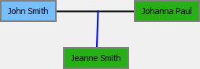

Ligilo representas la geedzecon inter du personoj. Estas linio ke, konektas du kartojn.
La defaŭlta koloro estas nigra. Gepatra interrilato estas representata kun
blua linio (defaŭlta).
Ekzemplo :

Tie, la nigra linio representas la geedzecon kaj la blua linio konektas al la (sola) infano.
Superflugata ligilo estas ruĝa (defaŭlta).
Selektata ligilo estas verda (defaŭlta).
La koloroj estas ŝanĝeblaj en la menuo.
La sekva tri temoj eksplikas kiel vi povas aldoni, eldoni aŭ forigi ligilo.